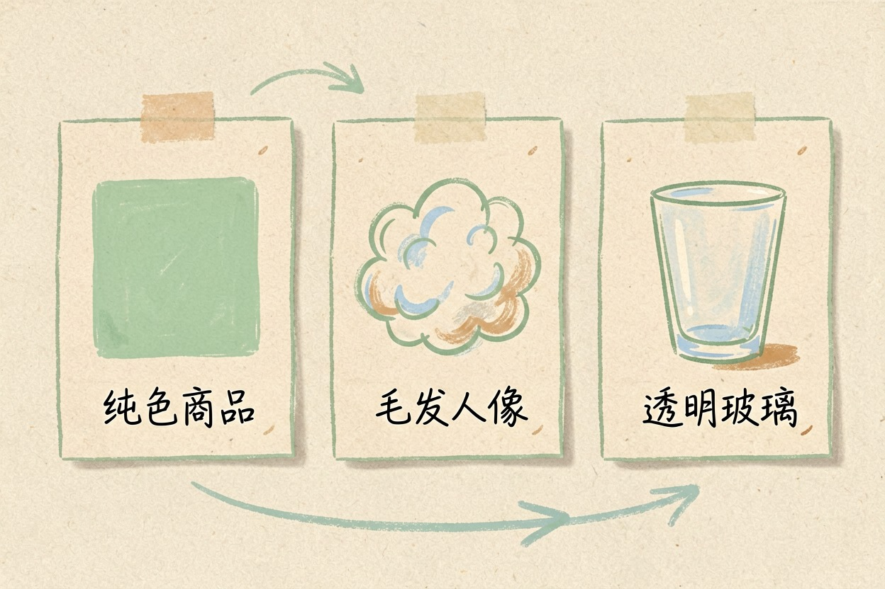
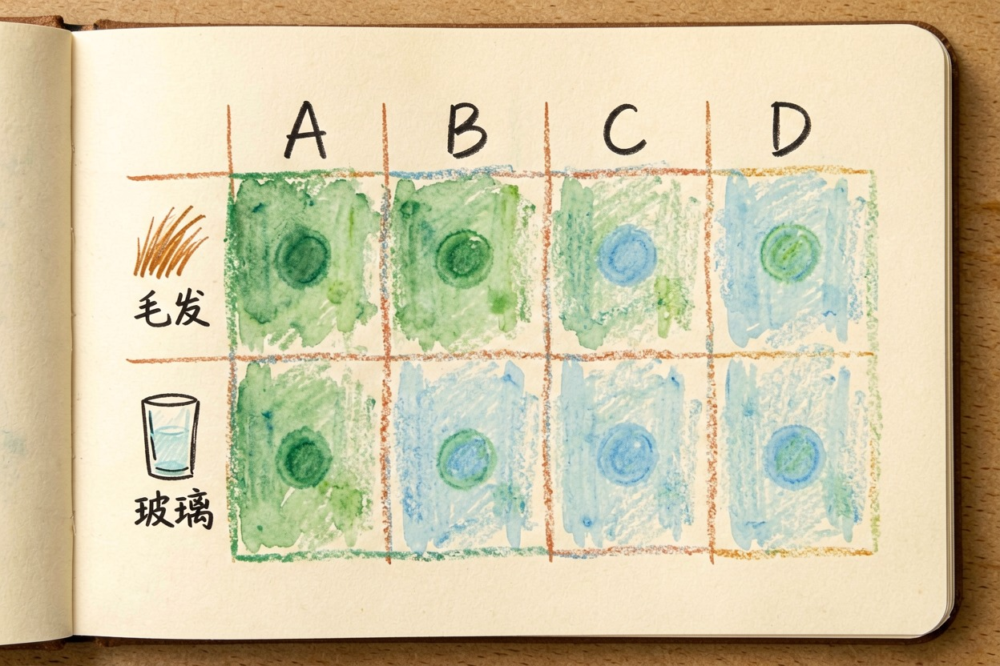
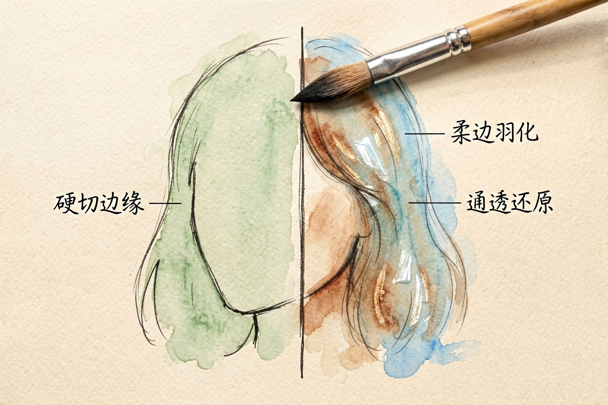
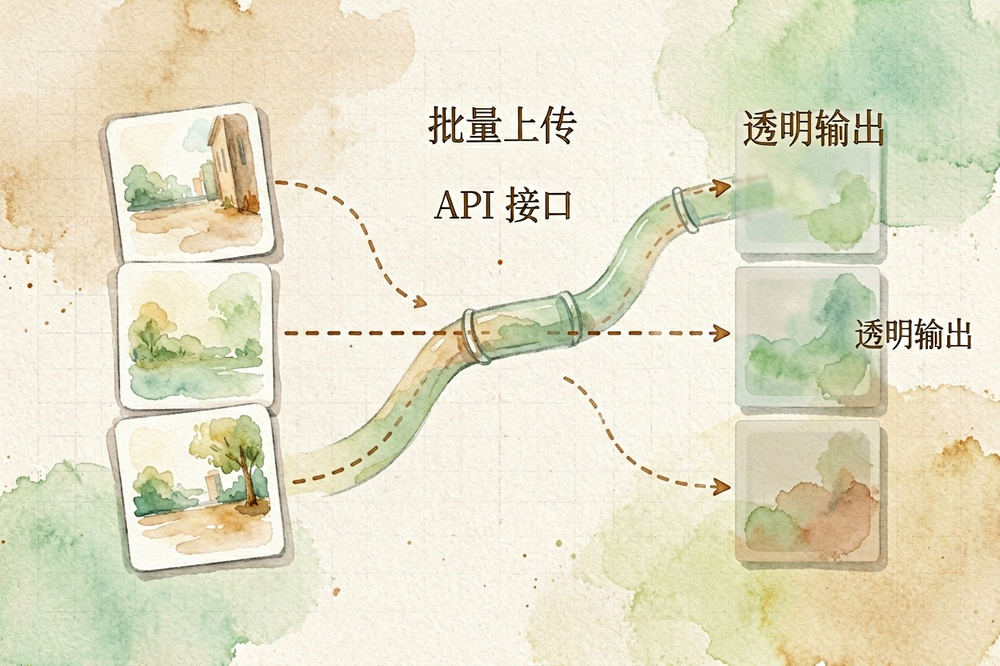
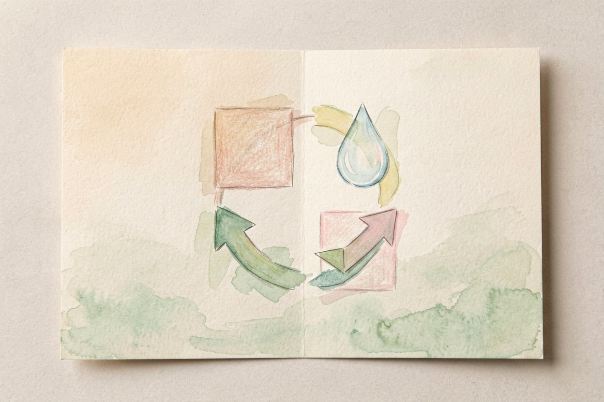

AI 抠图工具哪个好用？四款实测横向对比 — Learntide
抠图看似一步搞定，真到头发丝和玻璃杯才见高下，选工具得先认准自己的图难在哪。
ai抠图工具哪个好：先看你要扣什么图

ai抠图工具哪个好，得先看你要扣什么。扣纯色背景的商品，各家都轻松。扣头发丝、玻璃、婚纱，差距立刻拉开。先分清素材类型，再谈哪款强。
别一上来就比参数。你手里那张图的难处，才是选工具的标准。背景越乱，越考验边缘算法。免费档的差别也大，有的每天限张数，有的限分辨率，先问清再上手。
四款工具横向实测

我们挑了四款常见工具做同图测试。一张白底商品，一张宠物毛发，一张透明玻璃杯。结果如下：
| 工具 | 白底商品 | 宠物毛发 | 玻璃杯 | 速度 |
|---|---|---|---|---|
| 工具 A | 干净 | 略有毛边 | 边缘发灰 | 快 |
| 工具 B | 干净 | 较好 | 较好 | 中 |
| 工具 C | 干净 | 优秀 | 优秀 | 慢 |
| 工具 D | 干净 | 一般 | 一般 | 快 |
白底图四款都过关。毛发和玻璃杯差别明显。下面分别说。四款的免费额度不一样，限张数还是限清晰度，注册前看清楚，别等到扣图时才发现不够用。
毛发与透明物：差距最大的地方

宠物、人像的头发最考功力。工具 A 快但毛边多，放大就露馅。工具 C 边缘最自然，代价是慢。若你常做宠物店、写真类图，这一项权重最高。
玻璃杯、纱裙这类半透明物，看的是透明度还原。工具 B、C 能留住通透感。工具 D 容易把高光一刀切平。透明物多的图，优先选 B 或 C。导出前把图放最大看一眼发丝和杯沿，这一步谁替不了你，评测截图常美化边缘。
边缘羽化也值得看。好的工具会让发丝带一点柔边，硬切的轮廓像贴上去的。放大到百分百，差别一眼可辨。这一项常被忽略，却最影响成品质感。
批量与接口：效率差异

单张图差别不大。一旦要扣一百张，效率天差地别。支持批量上传和 API 的工具，能省下大量重复劳动。手动一张张拖，半天就耗光耐心。
下面这段参数，适合接在支持 API 的工具上做批量：
批量抠图请求示例：
POST /api/remove-bg
{
"image_list": ["sku001.png", "sku002.png"],
"mode": "precise",
"edge": "soft",
"output_format": "png"
}
返回：每张图的透明 PNG 下载链接要扣的量小，网页版拖拽就够。量大，就奔着 API 去。注意有些服务会把图传到云端，涉密图先确认隐私条款，别拿合同、证件图去试水。免费档每天能扣几张先数清楚，临时要扣一大批发觉不够最误事。供应商换得勤，今天好用的下次未必还在，固定用量就挑个稳的。
怎么选：按图挑工具
常扣商品白底图，随便哪款都行。常扣毛发人像，选边缘强的。常扣透明物，选还原通透的。要批量，选有 API 的。
新手别一上来追最强参数。先用网页版免费档扣十张自己的图，手感比评测更准。ai抠图工具哪个好，看你最常见的那张图。

本文信息核对于 2026-08-08。AI 产品的价格、免费额度与功能变动频繁，实际以各工具官网当前说明为准。